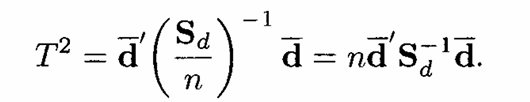

library(BSDA)Pertemuan 5: Uji Beda Mean Data Multivariat
Pengantar Multivariat
Offline di Departemen Matematika
Review Uji Beda Mean 1 Sampel Univariat
Dalam uji beda mean 1 sampel univariat, hipotesis yang ingin kita uji adalah
\(H_0: \mu = \mu_0\)
\(H_1: \mu \neq \mu_0\)
\(H_1: \mu \neq \mu_0\)
dengan \(\mu_0\) adalah nilai mean yang ditentukan.
Ketika Variansi Diketahui
Asumsi n observasi sampel acak \(y_1, y_2, ..., y_n\) berdistribusi \(N(\mu,\sigma^2)\) dengan \(\sigma^2\) diketahui, maka digunakan statistik uji \(z\) yaitu

Tolak \(H_0\) pada taraf signifikansi \(\alpha\) jika \(|z| \geq z_{\alpha/2}\)
Atau dengan distribusi chi-square
Tolak \(H_0\) pada taraf signifikansi \(\alpha\) jika \(z^2 \geq \chi^2_{\alpha, 1}\)
Implementasi Program
Uji \(z\) dapat dilakukan dengan memanggil fungsi z.test() pada r dari library BSDA
data <- c(88, 92, 94, 94, 96, 97, 97, 97, 99, 99, 105, 109, 109, 109, 110, 112, 112, 113, 114, 115)
z.test(data, mu = 100, sigma.x = 15)
One-sample z-Test
data: data
z = 0.90933, p-value = 0.3632
alternative hypothesis: true mean is not equal to 100
95 percent confidence interval:
96.47608 109.62392
sample estimates:
mean of x
103.05 Ketika Variansi Tidak Diketahui
Ketika variansi tidak diketahui, gunakan estimasi sampel dari \(\sigma^2\) yaitu \(s^2\), di mana

Uji yang digunakan adalah uji \(t\), dengan statistik uji:

Tolak \(H_0\) pada taraf signifikansi \(\alpha\) jika \(|t| \geq t_{\alpha/2, n-1}\)
Implementasi Program
data <- c(88, 92, 94, 94, 96, 97, 97, 97, 99, 99, 105, 109, 109, 109, 110, 112, 112, 113, 114, 115)
t.test(data, mu=100)
One Sample t-test
data: data
t = 1.5976, df = 19, p-value = 0.1266
alternative hypothesis: true mean is not equal to 100
95 percent confidence interval:
99.05424 107.04576
sample estimates:
mean of x
103.05 Uji Beda Mean 1 Sampel Multivariat
Dalam uji beda mean 1 sampel multivariat, hipotesis yang ingin kita uji adalah
\(H_0: \pmb{\mu} = \pmb{\mu_0}\)
\(H_1: \pmb{\mu} \neq \pmb{\mu_0}\)
\(H_1: \pmb{\mu} \neq \pmb{\mu_0}\)
dengan \(\pmb{\mu_0}\) adalah vektor mean yang ditentukan.
Ketika Variansi Diketahui
Asumsi n vektor observasi sampel acak \(\pmb{y}_1, \pmb{y}_2, ..., \pmb{y}_n\) berdistribusi \(N_p(\pmb{\mu},\pmb{\Sigma})\) dengan \(\pmb{\Sigma}\) diketahui, maka digunakan statistik uji \(Z^2\) yaitu

Tolak \(H_0\) pada taraf signifikansi \(\alpha\) jika \(Z^2 > \chi^2_{\alpha, p}\)
Implementasi Program
Digunakan data dari tabel 3.7 (Ramus Bone) dari buku Methods of Multivariate Analysis by Alvin C. Rencher, William F. Christensen. 3rd Edition
Misalkan ingin diuji apakah \((\mu_1, \mu_2, \mu_3, \mu_4) = (48, 49, 50, 51)\)
data <- read.csv('https://raw.githubusercontent.com/farhanage/dataset-for-study/refs/heads/main/Analisis%20Multivariat/Tabel%203.7%20(Ramus%20Bone%20Length%20at%20Four%20Ages%20).csv', sep=';')[2:5]
head(data) y1 y2 y3 y4
1 47.8 48.8 49.0 49.7
2 46.4 47.3 47.7 48.4
3 46.3 46.8 47.8 48.5
4 45.1 45.3 46.1 47.2
5 47.6 48.5 48.9 49.3
6 52.5 53.2 53.3 53.7Misalkan diketahui \(\pmb{\Sigma}\) adalah matrix diagonal dengan entri-entri diagonalnya bernilai 3.
mu <- c(48, 49, 50, 51)
n <- nrow(data)
p <- length(mu)
ybar <- colMeans(data)
Sigma <- diag(3, ncol=4, nrow=4)Maka hitung statistik uji:
Z_sq <- n * t(ybar-mu) %*% solve(Sigma) %*% (ybar-mu)
Z_sq [,1]
[1,] 8.980333qchisq(p=0.05, df=p, lower.tail = FALSE)[1] 9.487729Apa kesimpulannya?
Ketika Variansi Tidak Diketahui
Ketika variansi tidak diketahui, gunakan estimasi sampel dari \(\pmb{\Sigma}\) yaitu \(\textbf{S}\), di mana


Uji yang digunakan adalah uji Hotelling’s \(T^2\), dengan statistik uji:

Tolak \(H_0\) pada taraf signifikansi \(\alpha\) jika \(T^2 > T^2_{\alpha, p, n-1}\)
Statistik uji \(T^2\) dapat dibawa ke distribusi \(F\) dengan hubungan:

Dalam uji beda mean 1 sampel, nilai \(v\) adalah \(n-1\)
Implementasi Program
S <- cov(data)
T2 <- n * t(ybar - mu) %*% solve(S) %*% (ybar - mu)
T2 [,1]
[1,] 1.792636Cek nilai tabel \(T^2_{\alpha, p, n-1}\) di buku
Atau dengan Pendekatan distribusi F
F <- (n - p)/(n*p - p)*T2
F [,1]
[1,] 0.377397# Titik kritis f
qf(0.05, p, n-p, lower.tail = FALSE)[1] 3.006917# Pvalue f
pf(F, p, n - p, lower.tail = FALSE) [,1]
[1,] 0.8214234# Titik kritis T^2
((n*p - p)/(n - p))*qf(0.05, p, n-p, lower.tail = FALSE)[1] 14.28286Apa kesimpulannya?
Hotelling’s \(T^2\) Dengan Library
Penggunaan library kurang disarankan untuk pengerjaan karena proses penghitungan tidak terlihat, tetapi penggunaan library ini bagus untuk crosschecking jawaban kalian.
ICSNP::HotellingsT2(data, mu = mu, test = "f")
Hotelling's one sample T2-test
data: data
T.2 = 0.3774, df1 = 4, df2 = 16, p-value = 0.8214
alternative hypothesis: true location is not equal to c(48,49,50,51)(Pastikan install library ICSNP)
Uji Beda Mean 2 Sampel Multivariat Independen
Dalam uji beda mean 2 sampel multivariat saling independen, hipotesis yang ingin kita uji adalah
\(H_0: \pmb{\mu_1} = \pmb{\mu_2}\)
\(H_1: \pmb{\mu_1} \neq \pmb{\mu_2}\)
\(H_1: \pmb{\mu_1} \neq \pmb{\mu_2}\)
dengan \(\pmb{\mu_1}\), \(\pmb{\mu_2}\) adalah vektor mean dari variabel-variabel sampel acak yang ingin diuji.
Statistik uji yang digunakan adalah:

dengan

Tolak \(H_0\) pada taraf signifikansi \(\alpha\) jika \(T^2 \geq T^2_{\alpha, p, n_1+n_2-2}\)
atau dengan pendekatan distribusi \(F\)

Implementasi Program
Gunakan tabel 5.9
data <- read.csv('https://raw.githubusercontent.com/farhanage/dataset-for-study/refs/heads/main/Analisis%20Multivariat/Tabel%205.9%20(Number%20of%20Words%20and%20Number%20of%20Verbs).csv', sep=';')
data Student y1 y2 x1 x2
1 1 148 20 137 15
2 2 159 24 164 25
3 3 144 19 224 27
4 4 103 18 208 33
5 5 121 17 178 24
6 6 89 11 128 20
7 7 119 17 154 18
8 8 123 13 158 16
9 9 76 16 102 21
10 10 217 29 214 25
11 11 148 22 209 24
12 12 151 21 151 16
13 13 83 7 123 13
14 14 135 20 161 22
15 15 178 15 175 23Akan diuji
\(H_0: \pmb{\mu_y} = \pmb{\mu_x}\)
\(H_1: \pmb{\mu_y} \neq \pmb{\mu_x}\)
\(H_1: \pmb{\mu_y} \neq \pmb{\mu_x}\)
y <- data[, 2:3]
y y1 y2
1 148 20
2 159 24
3 144 19
4 103 18
5 121 17
6 89 11
7 119 17
8 123 13
9 76 16
10 217 29
11 148 22
12 151 21
13 83 7
14 135 20
15 178 15x <- data[, 4:5]
x x1 x2
1 137 15
2 164 25
3 224 27
4 208 33
5 178 24
6 128 20
7 154 18
8 158 16
9 102 21
10 214 25
11 209 24
12 151 16
13 123 13
14 161 22
15 175 23n1 <- nrow(y)
n2 <- nrow(x)
p <- length(y)
# Vektor xbar ybar
ybar <- colMeans(y)
ybar y1 y2
132.93333 17.93333 xbar <- colMeans(x)
xbar x1 x2
165.73333 21.46667 # Matriks Sx dan Sy
Sy <- cov(y)
Sy y1 y2
y1 1405.7810 153.7095
y2 153.7095 28.6381Sx <- cov(x)
Sx x1 x2
x1 1299.7810 137.34762
x2 137.3476 27.98095# Hitung Spl
Spl <- 1/(n1 + n2 - 2) * ((n1 - 1) * Sy + (n2 - 1) * Sx)
Spl y1 y2
y1 1352.7810 145.52857
y2 145.5286 28.30952# Hitung T^2
T2 <- (n1 * n2)/(n1 + n2) * t(ybar - xbar) %*% solve(Spl) %*% (ybar - xbar)
T2 [,1]
[1,] 5.964616Atau dengan bantuan library DescTools
library(DescTools)HotellingsT2Test(y, x, test='chi')
Hotelling's two sample T2-test
data: y and x
T.2 = 5.9646, df = 2, p-value = 0.05068
alternative hypothesis: true location difference is not equal to c(0,0)Uji t 2 Sampel Univariat Ketika H0 Ditolak
Ketika \(H_0\) ditolak, gunakan uji t 2 sampel pada masing-masing variabel
\(H_0: \mu_1 = \mu_2\)
\(H_1: \mu_1 \neq \mu_2\)
\(H_1: \mu_1 \neq \mu_2\)
dengan statistik uji

Tolak \(H_0\) pada taraf signifikansi \(\alpha\) jika \(|t| > t_{\alpha/2, n_1+n_2-2}\)
Implementasi Kode
t_values <- c()
p_values <- c()
for (i in 1:ncol(y)){
test <- t.test(y[, i], x[, i], mu=0, var.equal=TRUE)
t_values[i] <- test$statistic
p_values[i] <- test$p.value
}
t_values[1] -2.442253 -1.818649# t penolakan
qt(0.025, n1+n2-2, lower.tail = FALSE)[1] 2.048407p_values[1] 0.02116598 0.07967712Kesimpulannya?
Uji Beda Mean 2 Sampel Berpasangan Multivariat
Tinjau data tabel 5.9 sebagai data berpasangan \((\pmb{y}, \pmb{x})\) di mana y dan x saling berkorelasi (dependen)
dapat dihitung selisih dari tiap variabel yang diukur (\(d\)):
data$d1 <- data$y1 - data$x1
data$d2 <- data$y2 - data$x2
data Student y1 y2 x1 x2 d1 d2
1 1 148 20 137 15 11 5
2 2 159 24 164 25 -5 -1
3 3 144 19 224 27 -80 -8
4 4 103 18 208 33 -105 -15
5 5 121 17 178 24 -57 -7
6 6 89 11 128 20 -39 -9
7 7 119 17 154 18 -35 -1
8 8 123 13 158 16 -35 -3
9 9 76 16 102 21 -26 -5
10 10 217 29 214 25 3 4
11 11 148 22 209 24 -61 -2
12 12 151 21 151 16 0 5
13 13 83 7 123 13 -40 -6
14 14 135 20 161 22 -26 -2
15 15 178 15 175 23 3 -8Untuk menguji
\(H_0: \pmb{\mu_y} = \pmb{\mu_x}\)
\(H_1: \pmb{\mu_y} \neq \pmb{\mu_x}\)
\(H_1: \pmb{\mu_y} \neq \pmb{\mu_x}\)
ekivalen dengan menguji
\(H_0: \pmb{\mu_d} = \pmb{0}\)
\(H_1: \pmb{\mu_d} \neq \pmb{0}\)
\(H_1: \pmb{\mu_d} \neq \pmb{0}\)
Menggunakan statistik uji

Tolak \(H_0\) pada taraf signifikansi \(\alpha\) jika \(T^2 > T^2_{\alpha, p, n-1}\)
Implementasi Kode
d <- y - x
d y1 y2
1 11 5
2 -5 -1
3 -80 -8
4 -105 -15
5 -57 -7
6 -39 -9
7 -35 -1
8 -35 -3
9 -26 -5
10 3 4
11 -61 -2
12 0 5
13 -40 -6
14 -26 -2
15 3 -8dbar <- colMeans(d)
dbar y1 y2
-32.800000 -3.533333 Sd <- cov(d)
Sd y1 y2
y1 1096.029 139.90000
y2 139.900 31.55238n <- nrow(d)
p <- length(d)
# Hitung T^2
T2 <- n * t(dbar) %*% solve(Sd) %*% dbar
T2 [,1]
[1,] 15.19123Latihan Soal